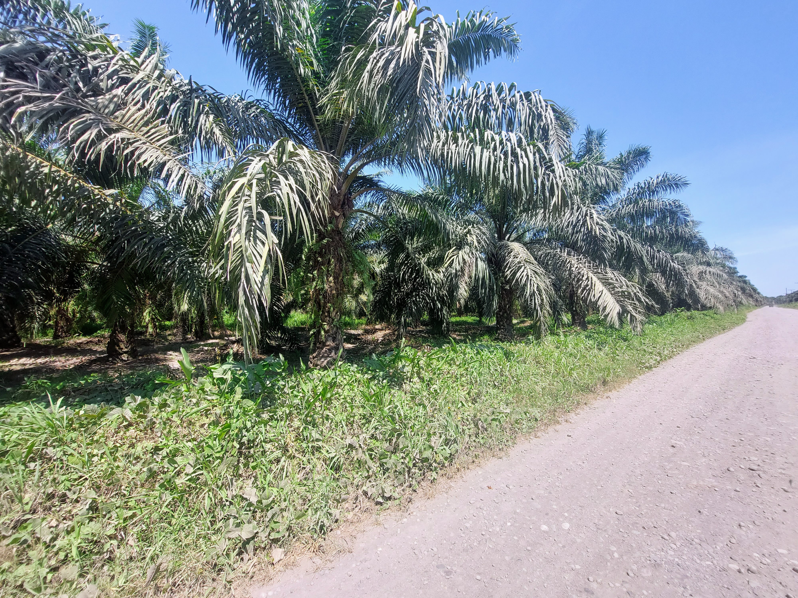

Patterns of Anthropogenic Nitrogen Inputs
Spatial patterns of anthropogenic nitrogen inputs in Panama: Toward sustainable nitrogen management.
Project description
Excess of nutrients are a widespread environmental issue that modifies the dynamics of both
freshwater and marine systems, with consequences for economic activity (e.g., fisheries, tourism),
human health, and social well-being. The purpose of this research is to identify the sources and
drivers of agricultural fertilizer inputs in Panama. This project will employ farmer surveys on
fertilizer consumption, an agricultural census, and land use maps to quantify the nutrient inputs
from various crops. Furthermore, the project will employ hydrological and spatial models to identify
and map all nitrogen usage hotspots in Panama. The findings of this study will aid in the improvement
of management strategies in Panama in order to provide opportunities for reduce their environmental
impact of excess of nitrogen and provide important management practices in order to improve the efficient
use of nitrogen fertilizers in Panama.

Leads: Jorge Manuel Morales-Saldaña, Hector Guzman, Brian Leung
Publications: Submitted and in review